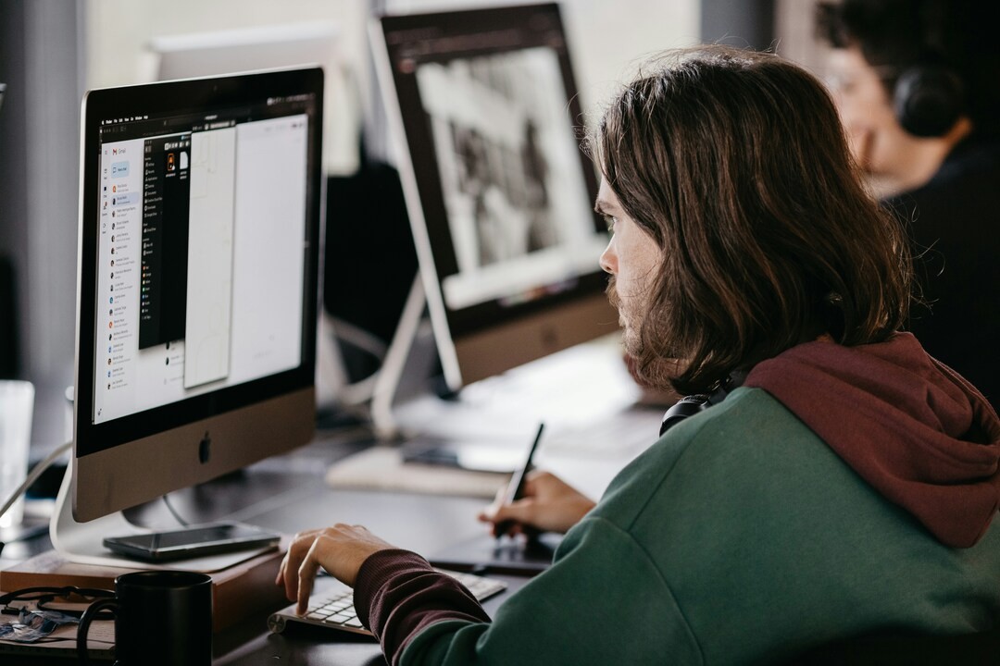

Changer de parcours pour mieux se trouver.
A la fois artiste, salarié, et maintenant étudiant, j’aimerais créer des projets qui permettent de lier créativité et communauté.
Un parcours un peu atypique peut représenter une difficulté sur le marché du travail, et conduire à un certain isolement, mais parfois il est aussi synonyme d’une grande curiosité et d’une envie de continuer à se trouver et à persévérer.
Continuer de changer, d'apprendre et de créer.
C'est dans un trajet de bus pendant que je voyageais avec un ami en Corée que j’ai accepté la réalité que j'allais changer beaucoup de fois de métier dans ma vie. Les signes étaient tous là ; une curiosité qui n’a jamais arrêté de grandir depuis petit, mes envies d’études qui allaient du littéraire au dessin en passant par la science et avec un virage en sociologie puis avec un arrêt pour le cinéma. Et accessoirement, ma collection infinie de hobbys divers et variés, qui grandissent à une vitesse qui pourrait faire fuir mon banquier. Les conseillères auxquelles j’ai parlé appellent ça “être un artiste” en rigolant. Bon, alors, je suis un artiste. Et j’ai besoin de constamment changer, et d’apprendre, et de créer. Heureusement à 25ans, c’est un peu plus facile de reprendre ses études, alors me revoilà dans un nouveau cursus, avec de nouveaux projets et de nouvelles envies. Et toutes mes dents, aussi.
Je m’appelle Yann, je suis enfant devenu artiste devenu étudiant puis stagiaire, devenu salarié et finalement devenu chômeur, redevenu salarié puis redevenu étudiant. J’ai grandi dans le Sud-Ouest, ce qui fait que je rigole très fort, et je vis maintenant à Angoulême. Je suis touche à tout et j’aime particulièrement créer avec mes mains (mosaïque, linogravure, sculpture, etc.). J’aimerais beaucoup pouvoir utiliser tous ces intérêts différents dans mes futurs projets.
Un parcours atypique entre ingénierie et art.
Par chance, l’année où je suis entré au lycée s’est créée l’option Sciences de l’Ingénieur. J’ai sauté le pas, ce qui m’a permis de comprendre plein de choses sur les objets qui nous entourent, leurs systèmes, comment ils sont pensés, pourquoi on les créé. Puis j’ai décidé de continuer mes études dans le cinéma d’animation 2D. L’animation est une de mes passions, et, choix malin, c’est un milieu avec beaucoup de métiers différents mais accessibles à travers le même cursus. J’ai ensuite pu trouver un stage en tant que Coloriste en studio d’animation pendant ma dernière année d’étude, et être embauché ensuite en Compositing
Travailler dans le studio d’animation Shan-Too m’a permis d'étudier sagement mon fonctionnement dans le milieu du travail. Les horaires y sont assez flexibles, ce qui me correspondait assez bien, en effet les horaires en studio sont souvent de 10h à 19h. J’ai particulièrement adoré changer de missions plusieurs fois par jour. Avoir beaucoup de taches diverses me permettait d’être occupé constamment et de rester stimulé. C’est quelque chose que je recherche maintenant dans mon futur travail.
Après cette expérience cependant, les offres d’emploi ont beaucoup chuté en animation. Je me suis donc concentré sur mes projets personnels, et j’ai opté pour un travail de nuit à mi-temps où je réalise des inventaires. C’est un métier physique, mais où je suis entouré de plein de personnes très différentes. Ce travail m’a fait réaliser que même si j’avais comme projet avant de créer mon propre atelier seul, j’avais en réalité besoin d’être en compagnie des autres. Il me fallait donc un nouveau départ, et de nouveaux projets.
Une envie de créer des lieux qui rassemblent.
C’est pendant une période où je me suis senti assez seul et sans repères, à force de ne pas retrouver d’opportunité en animation, que je me suis remis à réfléchir. M’est venue l’idée de créer des projets plus axés sur la communauté et l’entraide. J’aimerais continuer à travailler, et sur le côté monter un lieu commun qui permettrait de réunir des personnes isolées autour d’ateliers créatifs. Créer un lieu commun, avec tout matériel fourni et accessible, et à but non lucratif, où chacun pourrait s’installer à des horaires libres et créer ce qu’i.el veut dans un espace qui vit.
J’ai réalisé à quel point l’isolement pour les personnes sans emploi pèse vraiment et semble sans solution. Elles sont 21 % à être isolées socialement, par rapport aux 13% des personnes avec emploi. Surtout quand on y ajoute le facteur de précarité qui rend nombre d’activités inaccessibles. J’aurais adoré avoir accès à ce genre de lieu qui ne requiert pas de postuler ou d’être sélectionné ou d’avoir déjà son propre matériel. Même aujourd’hui en reprenant mes études en distanciel, c’est un tiers lieu qui me correspondrait et me motiverait.
Trouver sa voie est pour beaucoup un chemin sinueux. Personnellement, ces difficultés m’ont aidé à concentrer mon énergie sur des nouveaux projets plus en phase avec mes envies et valeurs.